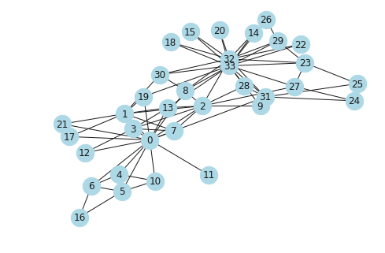
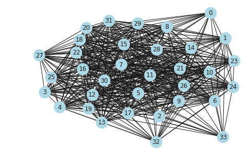
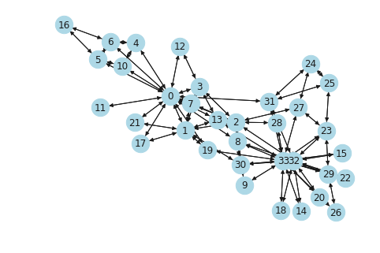
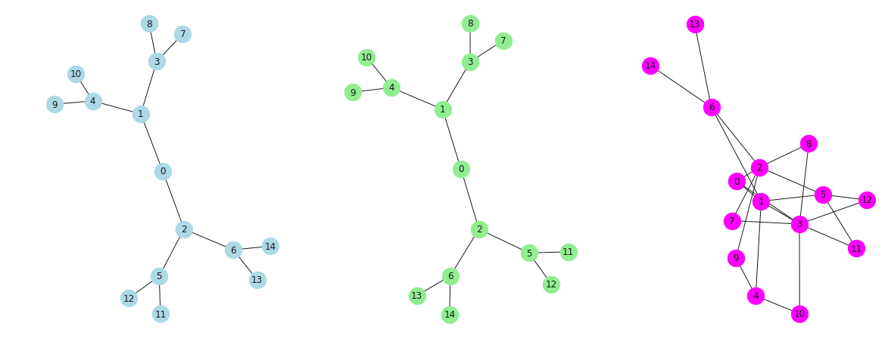
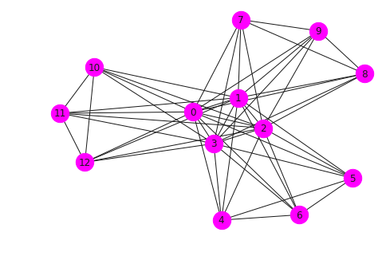
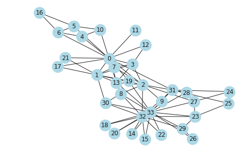

Algorithm - III
Operators, Shortest Paths, Trees, Planarity, Flows, Directed Acyclic Graphs, Approximations and Heuristics, Assortativity
import matplotlib.pyplot as plt import networkx as nx import seaborn as sns sns.set() %matplotlib inline
import warnings import matplotlib.cbook warnings.filterwarnings("ignore",category=matplotlib.cbook.mplDeprecation)
G = nx.karate_club_graph() nx.draw(G, node_size = 500, node_color = "lightblue", with_labels = True)

Operators
Unary operations on graphs
complement(G)Returns the graph complement of G.reverse(G[, copy])Returns the reverse directed graph of G.
Operations on graphs including union, intersection, difference.
compose(G, H)Returns a new graph of G composed with H.union(G, H[, rename, name])Return the union of graphs G and H.disjoint_union(G, H)Return the disjoint union of graphs G and H.intersection(G, H)Returns a new graph that contains only the edges that exist in both G and H.difference(G, H)Returns a new graph that contains the edges that exist in G but not in H.symmetric_difference(G, H)Returns new graph with edges that exist in either G or H but not both.
Operations on many graphs.
compose_all(graphs)Returns the composition of all graphs.union_all(graphs[, rename])Returns the union of all graphs.disjoint_union_all(graphs)Returns the disjoint union of all graphs.intersection_all(graphs)Returns a new graph that contains only the edges that exist in all graphs.
Graph products.
cartesian_product(G, H)Returns the Cartesian product of G and H.lexicographic_product(G, H)Returns the lexicographic product of G and H.rooted_product(G, H, root)Return the rooted product of graphs G and H rooted at root in H.strong_product(G, H)Returns the strong product of G and H.tensor_product(G, H)Returns the tensor product of G and H.power(G, k)Returns the specified power of a graph.
CG = nx.complement(G) nx.draw(CG, node_size = 500, node_color = "lightblue", with_labels = True)

RG = nx.reverse(nx.to_directed(G)) nx.draw(RG, node_size = 500, node_color = "lightblue", with_labels = True)

G = nx.balanced_tree(2,3) H = nx.balanced_tree(3,2) plt.figure(figsize = [20,8]) plt.subplot(1,3,1) nx.draw(G, node_size = 500,node_color = 'lightblue', with_labels = True) plt.subplot(1,3,2) nx.draw(G, node_size = 500,node_color = 'lightgreen', with_labels = True) plt.subplot(1,3,3) nx.draw(nx.compose(H,G), node_size = 500, node_color = 'magenta', with_labels = True)

G = nx.balanced_tree(3,2) nx.draw(nx.power(G,k = 3), node_size = 500, node_color = 'magenta', with_labels = True)

Shortest Paths
Compute the shortest paths and path lengths between nodes in the graph.
These algorithms work with undirected and directed graphs.
shortest_path(G[, source, target, weight, …])Compute shortest paths in the graph.all_shortest_paths(G, source, target[, …])Compute all shortest paths in the graph.shortest_path_length(G[, source, target, …])Compute shortest path lengths in the graph.average_shortest_path_length(G[, weight, method])Returns the average shortest path length. has_path(G, source, target) Returns True if G has a path from source to target. Advanced Interface
Shortest path algorithms for unweighted graphs.
single_source_shortest_path(G, source[, cutoff])Compute shortest path between source and all other nodes reachable from source.single_source_shortest_path_length(G, source)Compute the shortest path lengths from source to all reachable nodes.single_target_shortest_path(G, target[, cutoff])Compute shortest path to target from all nodes that reach target.single_target_shortest_path_length(G, target)Compute the shortest path lengths to target from all reachable nodes.bidirectional_shortest_path(G, source, target)Returns a list of nodes in a shortest path between source and target.all_pairs_shortest_path(G[, cutoff])Compute shortest paths between all nodes.all_pairs_shortest_path_length(G[, cutoff])Computes the shortest path lengths between all nodes in G.predecessor(G, source[, target, cutoff, …])Returns dict of predecessors for the path from source to all nodes in G
Shortest path algorithms for weighed graphs.
dijkstra_predecessor_and_distance(G, source)Compute weighted shortest path length and predecessors.dijkstra_path(G, source, target[, weight])Returns the shortest weighted path from source to target in G.dijkstra_path_length(G, source, target[, weight])Returns the shortest weighted path length in G from source to target.single_source_dijkstra(G, source[, target, …])Find shortest weighted paths and lengths from a source node.single_source_dijkstra_path(G, source[, …])Find shortest weighted paths in G from a source node.single_source_dijkstra_path_length(G, source) Find shortest weighted path lengths in G from a source node. multi_source_dijkstra(G, sources[, target, …])Find shortest weighted paths and lengths from a given set of source nodes.multi_source_dijkstra_path(G, sources[, …])Find shortest weighted paths in G from a given set of source nodes.multi_source_dijkstra_path_length(G, sources)Find shortest weighted path lengths in G from a given set of source nodes.all_pairs_dijkstra(G[, cutoff, weight])Find shortest weighted paths and lengths between all nodes.all_pairs_dijkstra_path(G[, cutoff, weight])Compute shortest paths between all nodes in a weighted graph.all_pairs_dijkstra_path_length(G[, cutoff, …])Compute shortest path lengths between all nodes in a weighted graph.bidirectional_dijkstra(G, source, target[, …])Dijkstra’s algorithm for shortest paths using bidirectional search.bellman_ford_path(G, source, target[, weight])Returns the shortest path from source to target in a weighted graph G.bellman_ford_path_length(G, source, target)Returns the shortest path length from source to target in a weighted graph.single_source_bellman_ford(G, source[, …])Compute shortest paths and lengths in a weighted graph G.single_source_bellman_ford_path(G, source[, …])Compute shortest path between source and all other reachable nodes for a weighted graph.single_source_bellman_ford_path_length(G, source)Compute the shortest path length between source and all other reachable nodes for a weighted graph.all_pairs_bellman_ford_path(G[, weight])Compute shortest paths between all nodes in a weighted graph.all_pairs_bellman_ford_path_length(G[, weight])Compute shortest path lengths between all nodes in a weighted graph.bellman_ford_predecessor_and_distance(G, source)Compute shortest path lengths and predecessors on shortest paths in weighted graphs.negative_edge_cycle(G[, weight])Returns True if there exists a negative edge cycle anywhere in G.goldberg_radzik(G, source[, weight])Compute shortest path lengths and predecessors on shortest paths in weighted graphs.johnson(G[, weight])Uses Johnson’s Algorithm to compute shortest paths. Dense Graphs
Floyd-Warshall algorithm for shortest paths.
floyd_warshall(G[, weight])Find all-pairs shortest path lengths using Floyd’s algorithm.floyd_warshall_predecessor_and_distance(G[, …])Find all-pairs shortest path lengths using Floyd’s algorithm.floyd_warshall_numpy(G[, nodelist, weight])Find all-pairs shortest path lengths using Floyd’s algorithm.reconstruct_path(source, target, predecessors)Reconstruct a path from source to target using the predecessors dict as returned by floyd_warshall_predecessor_and_distance
A* Algorithm
Shortest paths and path lengths using the A* (“A star”) algorithm.
astar_path(G, source, target[, heuristic, …])Returns a list of nodes in a shortest path between source and target using the A* (“A-star”) algorithm.astar_path_length(G, source, target[, …])Returns the length of the shortest path between source and target using t
G = nx.karate_club_graph() nx.draw(G, node_size = 500, node_color = "lightblue", with_labels = True)

nx.shortest_path(G,0,26)
[0, 8, 33, 26]
list(nx.all_shortest_paths(G,0,26))
[[0, 8, 33, 26], [0, 13, 33, 26], [0, 19, 33, 26], [0, 31, 33, 26]]